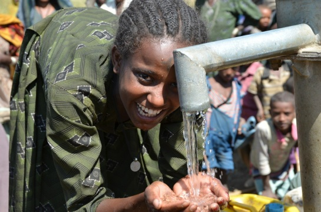

Our primary goal is to teach the power and grace of giving through children.
We can't teach the power of giving to anyone without action. Giving starts with you.
We want the opportunity and ability for the community to improve our contributions to the world.
GitHub
There is no end to worldwide issues affecting children in particular: unsafe water supplies, hunger, human trafficking, disease and environmental degradation. “Every year, an estimated 9.7 million children under the age of five die from largely preventable causes” (UNICEF). But what if we empowered our children to help end these issues? What if children knew that all it takes is a mosquito net to reduce the likelihood of dying from malaria? What if children knew that the newest DVD cost the same as saving a life? What if instead of owning more trucks and dolls than can be remembered to play with, a child saved 50 lives? These are the questions at the center of Asha and Evie’s ambitious and innovative problem solving project, The Giving Child.
The Giving Child began in December of 2009 and has been a non-profit since November 2010. It is a non-profit dedicated to finding ways of inviting and involving children in the giving and world changing process. We are starting out by building a series of Android game apps that are not only educational but also marvelously fun. Each app will address a specific issue faced by impoverished children around the world. The profits from the sale of each app will then go to fund solutions to that problem. For example, profits from the clean water app will go to charities such as Glimmer of Hope, Charity: Water, etc.
For our first project we will be building a clean water game with at least seven levels. Level 1 will be playable by children as young as 4 while level 7 will challenge a 13 year-old. Each level will consist of building a different, increasingly complex clean water project and then defending that project from danger. For example, level 1 will be a very easy “tap here repeatedly and quickly to dig a well, tap there to line it with bricks and climb out fast before the water gets you!” As the levels progress, speed and accuracy will become increasingly important.
Q. What was the moment you realized you wanted to start The Giving Child?
A (Asha). In December, 2009 I came home from my job as a nanny and my clients had been telling me that they wished that their 3 year-old, who was about to turn 4, would have a birthday party and raise money for a charity instead of getting a bunch of toys. Needless to say, he was not at all on board. He wanted to have all 100 kids from his school come and bring him two presents each. Around the same time, I received a Heifer International catalog and it was amazingly inspirational due to its accessibility. It explained the need and offered a simple solution. Later, Evie and I began talking about how we could make giving fun and interactive”and more real”for a child. The seed for TGC was planted and grew from that conversation.
A (Evie). I realized there was a strong need to help parents and kids overcome the hurdles to giving. At that time, I was a caregiver/nanny for a little boy who had the same challenge as every other child I had taken care of thus far: He really had no idea what his peers were facing around the world, such as starvation and disease. How could this child with a playroom the size of a small apartment develop real sympathy for other children who are literally starving to death? And yet, as I was sitting in his playroom, he would tell me, his curly hair shaking passionately, pointing his finger: “Did you know there are kids who are starving?!” How could I draw the dots between him and the problems that other kids face, to show him that he could make a difference? I felt a sense of urgency to fan the spark of curiosity in this little boy.
Q. What early experiences made you see a need for TGC?
A (Asha). When I was 7, my mom took us to the store at Christmastime to pick a toy for a poor child. As I was shopping for the perfect toy, it dawned on me that I would not be opening this toy, playing with it, or ever seeing this toy again, so I chose a toy that I barely liked rather than thinking of one that would make another child happy. To some extent, I understood that there were children who didn’t have toys. However, fully imagining a life without toys was practically impossible. Later, as nannies, we both saw similar situations with children giving and feeling conflicted about it.
Q. How can we overcome that gap in understanding?
A (Asha). One out of every five kids in the U.S. lives in a food-insecure household. The other 80% of American children have little understanding of what it is actually like to need anything: food, medical care, education, clean water…. Even when a child gives food to a hungry child, if the giver has never experienced actual hunger, they don’t understand the magnitude of the gift they have given. Most children, though, if they become aware of their peers’ struggles to have their basic needs met, want to alleviate that suffering. But they need help getting there”the education and the tools to act on those virtuous feelings.
Q. How do kids respond to the suffering of children in other situations?
A (Evie). They want to help, but it often becomes complicated. I took care of a little girl who learned about poverty and wanted to sponsor a child through an existing program. By that time, statistics were showing that these programs could actually be detrimental. They encouraged elitism by the sponsored children, and dependency. Rather than building communities they tended to build barriers and false hopes. Children could be lifted up and then suddenly dropped simply because the sponsor lost interest. At the time there weren’t many viable options for children to get involved internationally. Her mother, knowing the truth about the programs, shut down that idea.
Q. Are kids these days more aware of global community? What does it mean to them? Is it different than when you were growing up?
A (Asha). I think we tend to care about what is relevant and what we have experienced personally. So a child who goes hungry will be more aware of other hungry children. Whereas an overfed child might know the facts but not really identify as part of a global community of hungry children. It is hard to enjoy a nice meal while thinking seriously about children starving to death. So we eat our meal and then think about donating later. Merely telling a child about deathly malaria is troubling. “Children just like you are dying all over the world because they don’t have medicine.” The child considers different options but realizes that they can’t even journey to grandma’s house alone, let alone send out a cargo plane with 100,000 doses of anti-malarial medicine. And just like that, they realize there is a global community out there, but they are at best passive observers.
As a child I was very aware of people around the world. I always gave my offerings at church to world missions. My mom was really amazing at showing us that not everyone was as lucky as we were and, I was an avid reader by age 6, particularly fascinated by world history. I wished I was a princess for a short time around age 7 and then realized that, compared to most kids around the world, I was. I had lucked out in the birthplace lottery and my odds were about the same as having been a princess in medieval times.
A (Evie). Being ecologically and socially conscious is becoming more expected. Children tell me to make sure to recycle my take-out container. So on the easy and convenient issues, we’re making progress. But considering that about “21 children under the age of 5 years old die every minute mostly due to preventable causes” (UNICEF), we clearly have a long way to go. I have never had a child tell me to donate towards a clean water project instead of a toy. But the cost is the same, $20 can provide clean water for one person. Clean water prevents death from disease, grows an economy, and can determine food supply.
Q. At what age did you become interested in helping out?
A (Asha). At age 23, when I was working in Russia as a student missionary, it really struck me. I had $23,000 in student loans and $6,000 in medical bills and not a single one of the students at the college where I was working had even $1,000 in debt. They all had sponsors and when they graduated, they would be debt free. And yet, I had 1,000 times more opportunities than they did. To even acquire debt was a huge opportunity. At midterms there was a line outside my dorm door of students begging me for help in writing to their sponsors to assure them that they were working hard, “faithfully appreciative of your support” and “daring to dream that you will continue your support.” It was very tragic and unsettling to realize that the students’ futures hung on the whim of Americans who might decide that they would rather spend $1,500 next year on a new bike rather than providing a life changing, educational scholarship.
A (Evie). When I was four, I started learning about starving kids in Africa. All throughout my childhood, it made me sad, and I wanted to help so badly but there were no avenues at that time available to me. With no way to act on my desire to help, I became desensitized to the suffering of those in need and accustomed to my own ignorance and failures to help. I justified this by thinking that world hunger was too big of a challenge.
Q. Who inspires you?
A (Asha). Somaly Mam. Being sold as a child to a brothel, she went through a kind of hell most of us cannot imagine. Yet she came out of it, survived and then set out to change the lives of the little girls caught in the same situation. She is all in. If we could all be just a little bit more like her, our world would have only half its problems. Also, I admire Jared Greenburg and Nicholas Lumpp who started the Somaly Mam Foundation. They became a massive force behind the campaign to fight human trafficking, but they are quiet about what they have accomplished. Yet, we see the results of their work in campaigns at places like The Body Shop and even in entertainment such as Marie Claire Magazine. A horrible secret is getting a bright light shone upon it because of them.
A (Evie). Ben Rattray, the creator of Change.org. He discovered an easily accessible way for average people to make a strong impact. Now, making motions as small as a few keystrokes can make difference.
Q. What is your goal for TGC?
A (Asha). I dream of TGC empowering every child who has the desire to help. I want children to know about the very real needs of other kids out there”and to know without a shadow of a doubt that they can make a difference. And I want impoverished children to know that they are not alone, that it is not us and them. It is all of us. As a team, we can solve these problems.
A (Evie). These problems”unsafe water, death from curable diseases and hunger, sex and human trafficking” shouldn’t be allowed to exist. We want the next generation to be aware. Caring and giving can become a habit! I want children like me to be able to eat their dinner knowing that they already helped feed starving children.
Q. Why kids?
A (Asha). Honestly? Adults are making strides but lets face it, we complicate the problem, play politics, allow our ego to get involved and then give up. There are 64 million people under the age of 16 in the U.S., kids who may not have built up the same cynicism or memories of failure as adults. I believe, given real and interactive options for solving issues, most children will jump at the opportunity. They are going to inherit these issues, so let’s give our future adults a head start with incremental successes. Imagine the impact a child could have if they viewed world hunger as just one of the many problems they helped solve.
Q. How can parents inspire their kids to make a difference when the problems seem so large?
A (Asha). By breaking larger issues down into smaller problems. Your goal is not to feed every child in the Sudan; your goal is to buy a pair of goats for a family. Raising $4.3 billion to save 4 million lives with vaccines are impossible numbers for children to work with, but vaccinating a child for $14 is totally understandable and achievable. Make it specific to a region. Which place is the child most drawn to? Focus on the issues there. Clean water? Let’s raise money for a merry-go-round water pump!
A (Evie). That is exactly the purpose of TGC! The parent is no longer solely responsible for the seemingly impossible. TGC offers a fun and exciting way for them to learn about these gigantic problems and it gives them an immediate way to help. No more bottling up the devastation of feeling hopeless about not being able to help.
Q. How can we show kids that even small acts count?
A (Evie). Small acts seem to count the most because they add up so fast and they are contagious. If I hear that a philanthropist donated millions of dollars to an organization to feed the starving, I think that’s awesome! But it doesn’t motivate me to give a million dollars, because I don’t have it. But if a friend donates $5, I know I can do that too. And then it goes viral. That is our hope for TGC– to teach that small acts make a huge difference, especially when you team up with others. A network of awareness through giving creates an invested and personally responsible community..
If you would like to support our mission at The Giving Child*, simply click the “Donate” button below. It will guide you to a secure PayPal account
The Giving Child Organization is a registered 501(c)(3)organization, EIN 27-3804643. We operate as much as possible on a volunteer basis and maintain strict control on administrative overheads. Every penny of the donation received will be applied to development. No matter what amount you donate, it will be put to good use.
We would love to hear your opinions or feedback!